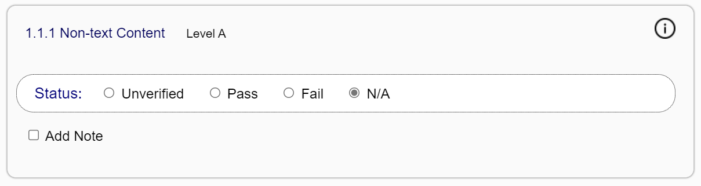

Evaluating a Publication
After configuring the evaluation, you must step through each success criterion and check that it is satisfied by the content. When checking each criterion, ensure that the publication meets all the specified requirements.
Whenever possible, you will be directed where to look for potential problems so that you do not have to review the entire publication (e.g., via the content lists in the Ace HTML report, such as the list of all images).
More typically, it will not be possible to pinpoint potential error locations — you will have to inspect the source markup of the publication for errors. This is especially true for WCAG success criterion 1.3.1, for example, which requires that information and relationships be expressed in the markup. Automatic testing tools have limited capabilities for determining when a structure has been mistagged.
Additional links are also provided to help you understand the various success criteria. These include direct links to the WCAG documentation, as well as links to markup best practices. If you are unsure about any aspect of a requirement, take the time to review these documents first.
As you evaluate each criterion, set its status to track overall conformance.
The following list describes each of the status options.
- Unverified
-
All success criteria are set to unverified by default, although this status may be changed when the Ace JSON report is loaded and analyzed.
All success criteria for the conformance level specified in the configuration options must be changed to pass, fail or not applicable prior to generating the final report. Failure to do so will result in a validation error. Note that optional success criteria (i.e., those above the level being tested) may be left unverified, in which case they will not be included in the final report.
- Pass
-
If the requirements of a success criterion are satisfied, set its status to pass.
Do not use the pass setting for success criteria that are not applicable to the content. For example, if the publication does not contain audio or video, do not pass it on success criteria for audio and video content. Doing so suggests that the publication contains content it does not. Use the not applicable status in these cases.
- Fail
-
If the publication fails a success criterion, setting the status to fail will reveal a field to describe why it failed.
Figure 2 — A text field for recording a note appears below the status line when the fail setting is selected. 
Failure notes are included in the final report for the publication by default but can be excluded to create reports for different audiences (e.g., to provide more detail to a publisher about specific errors in the markup without revealing those details to a general audience).
- N/A
-
Set the status to "N/A" (not applicable) for any criteria that are not applicable to the publication.
Figure 3 — Status section showing the not applicable option set. Do not state that a publication passes criteria that are not applicable to its content, as this practice is misleading to anyone reading the final report.
Note that when the not applicable status is selected, the text on how to review the success criterion is automatically hidden to reduce the visual clutter.
An optional note field is provided after the status section for recording general conformance notes. These notes are included in the generated report by default but can be excluded to create reports for different audiences.